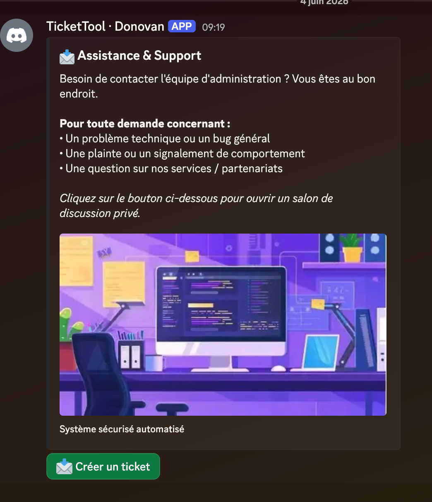

Discord TicketBot
Gestion automatisée et sécurisée du support communautaire sur Discord.

🎯 Le Contexte & Le Besoin
Dans le cadre de la gestion de communautés ou de serveurs de serveurs Discord (qu'ils soient axés gaming, événementiels ou professionnels), la centralisation et la confidentialité des demandes d'assistance sont primordiales. Les salons de discussion textuels classiques deviennent vite désordonnés.
La solution : Développer un bot Python autonome capable de générer instantanément des salons de tickets privés et temporaires en un clic, optimisant ainsi le flux de travail de l'équipe de modération.
🛠️ L'Architecture & Les Défis Techniques
Le projet a été développé en Python en utilisant la bibliothèque moderne discord.py (ou nextcord/disnake selon ta stack).
- Composant d'interface (UI) : Utilisation des boutons et menus déroulants natifs de Discord pour une expérience utilisateur fluide, évitant aux membres d'avoir à taper des commandes textuelles complexes.
- Gestion fine des permissions : Le défi principal résidait dans l'isolation complète du salon textuel créé : seul le membre initiateur et l'équipe administrative possèdent les droits d'écriture et de lecture.
- Nettoyage automatique : Implémentation d'un système de fermeture propre pour archiver ou supprimer le salon une fois le problème résolu afin de ne pas surchaarger le serveur Discord.
🚀 Fonctionnalités Clés Implémentées
⚡️ Un Clic suffit
Création instantanée du ticket via un bouton persistant sous un message d'accueil personnalisé.
🔒 Salosn Privés
Permissions gérées dynamiquement à la volée à la création du salon textuel dédié.
🧹 Commande de Fermeture
Clôture sécurisée avec confirmation pour éviter les suppressions accidentelles de tickets ouverts
🔮 Évolutions Futures
Afin de pousser ce projet encore plus loin, notamment en vue de ma future formation **ABCI au CRM de Mulhouse**, je prévois d'ajouter :
- Une persistance des données avec une base de données SQLite pour suivre l'historique et les statistiques des tickets ouverts.
- Un système de Transcript automatique qui génère un fichier HTML ou text contenant tout l'historique de la conversation avant la suppression du salon.